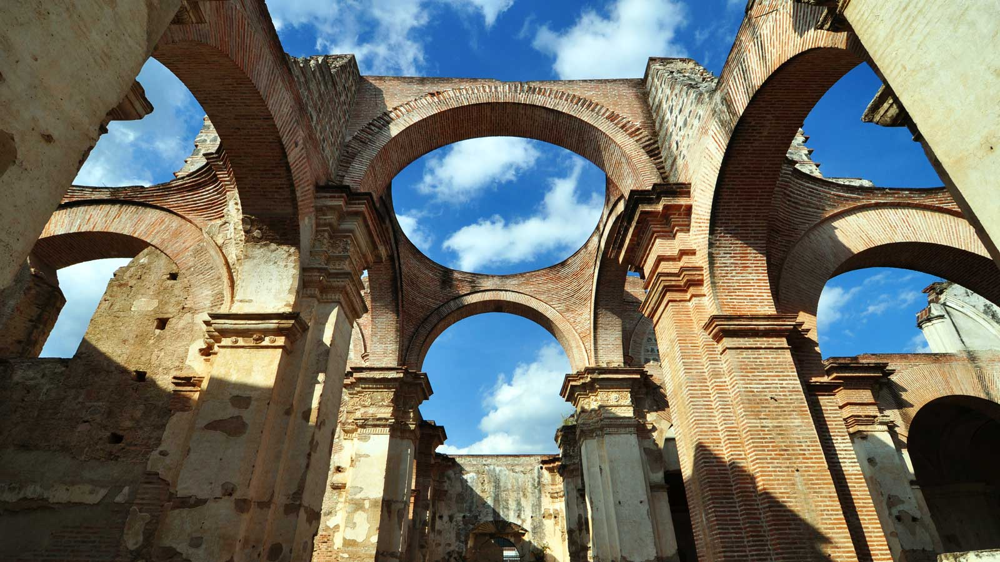
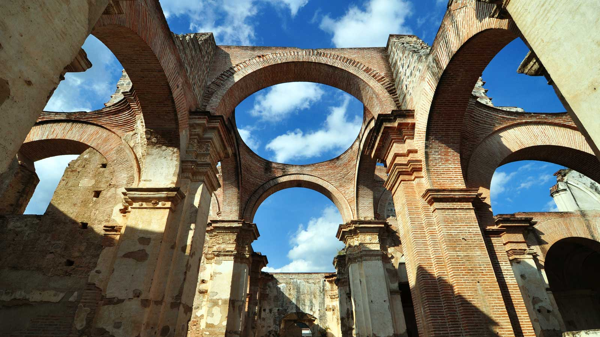

Panajachel
Fecha: 20/08/2017 - Ubicacion: Sololá, Guatemala

Panajachel —o San Francisco Panajachel— («San Francisco»: en honor a su santo patrono Francisco de Asís) es un municipio y ciudad del departamento de Sololá, en la República de Guatemala. Su cabecera municipal es la ciudad del mismo nombre, la cual tiene aproximadamente 11.000 habitantes. Se ubica en el altiplano guatemalteco a orillas del lago Atitlán a una altitud de 1500 metros sobre nivel del mar.
Fue fundado como una de las reducciones o «doctrinas», por los frailes franciscano y durante la época colonial fue sede de uno de los conventos de la Provincia franciscana del Santísimo Nombre de Jesús en Guatemala. Luego de la Independencia de Centroamérica en 1821, pasó a formar parte del departamento de Sololá/Suchitepéquez; y en 1838 fue parte del efímero Estado de Los Altos hasta que este fue reincorporado al Estado de Guatemala por el general conservador Rafael Carrera en 1840. Posteriormente, tras la Reforma Liberal de 1871, el 12 de agosto de 1872 el gobierno de facto del presidente provisorio Miguel García Granados creó el departamento de Quiché, al que adjudicó gran parte del territorio de Sololá, aunque Panajachel permaneció en este último.

Perfil del Autor
Pellentesque habitant morbi tristique senectus et netus et malesuada fames ac turpis egestas. Vestibulum tortor quam, feugiat vitae, ultricies eget, tempor sit amet, ante. Donec eu libero sit amet quam egestas semper. Aenean ultricies mi vitae est. Mauris placerat eleifend leo. Quisque sit amet est et sapien ullamcorper pharetra. Vestibulum erat wisi, condimentum sed, commodo vitae, ornare sit amet, wisi.